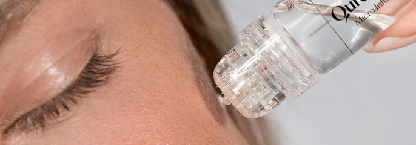
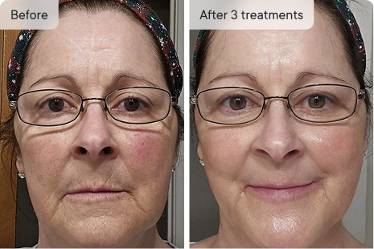
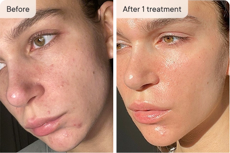
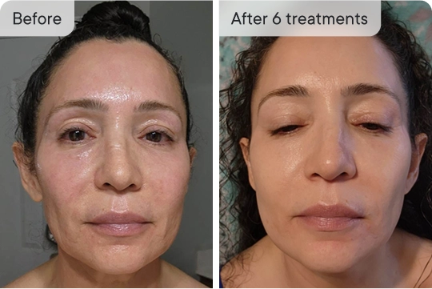
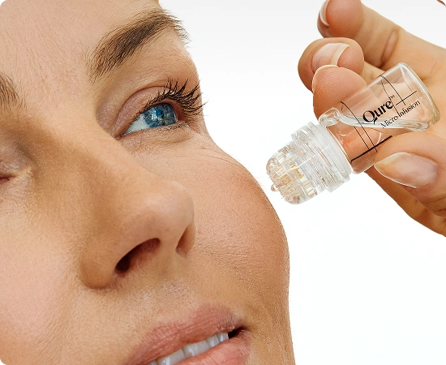

- Helps reduce appearance of fine lines, smooth texture whilst helping to infuse active ingredients into your skin.
- Virtually painless and performed in the comfort and convenience of your home.
- Minimal to no downtime with visible results.


Transform dull looking skin with Micro-Infusion Facial System

Jump To
FEATURED IN


Qure’s Micro-Infusion goes where your skin cream can’t…
Its tiny, almost painless, microneedles penetrate beyond the skin’s surface increasing serum absorption and delivering powerful active ingredients exactly where they’re needed!
-
90%agreed their skin looked better after Micro-Infusion.
-
93%reported skin appeared more hydrated and glowy.
-
70%Agreed their fine lines looked smoother.
-
87%prefer this treatment over clinic-based treatments.
ONLY FACIAL TREATMENTS YOUR SKIN NEEDS
Available until stocks last!
Introducing the Qure Micro-Infusion System
“Even my esthetician is hooked! And I can now visit beauty clinics less often.”
- Helps reduce appearance of fine lines
- Wake up with dewy looking, glowing skin
- Reveal brighter looking, firmer feeling skin
- Help fade appearance of dark spots and acne marks
OR pay 4 monthly payments of {$dyn} with


- +50
50+ Board Certified Dermatologists recommend Qure to their patients.
- 30-Day Money-Back Guarantee
- Free Shipping over {$dyn}
Achieve your skincare goals

 Kim L.
Kim L.
Verified
Minimize Fine Lines and Wrinkles
Smooth, plump, and firm your skin from within. Qure’s Micro-Infusion boosts collagen, restores hydration, and strengthens the skin barrier — all in one step.
- Deeply hydrates to leave skin dewy and plump
- Visibly softens fine lines for a smoother, more youthful look
- Strengthens the skin barrier to support long-lasting firmness

 Monika J.
Monika J.
Verified
Improve Tone & Texture
Gentle microneedling device boosts cell turnover and delivers brightening ingredients deep into the skin to visibly smooth, clarify, and even out tone.
- Refines rough texture by promoting skin renewal
- Fades dark spots and post-acne marks for a more even tone
- Helps minimize the look of pores for a smoother, clearer complexion

Ellie V.
Verified
Boost Skin’s Glow
Restore skin glow by infusing hydrating, brightening ingredients deep into the skin for a fresh, radiant finish that lasts.
- Brightens dull skin for a healthy, radiant complexion
- Enhances serum absorption for more visible results
- Leaves skin looking firmer, smoother, and refreshed
-
Free Shipping On
Orders Over {$dyn} -
Dermatologist
Reviewed -
Buy Now, Pay Later
Options Available -
Proven Results,
Backed By Science
Confident skin starts here
Dual action for twice the results

Qure’s Micro-Infusion System has a one-two punch, making it uniquely effective.
- First, it uses tiny 24K gold needles (thinner than a hair) to gently press into your skin. This helps improve firmness and smooth out fine lines.
- Next, it delivers serum through the tiny channels created, so your skin absorbs the ingredients more deeply.
Perfect for anyone wanting to add a fresh, dewy glowing look to their skin, especially before an event or occasion.
5 reasons why everyone is using the Qure Micro-Infusion System
- Saves time, money and hassle compared to in-clinic treatments
- Quick & easy 5-minute DIY facial from the convenience of home
- Virtually painless, little to no downtime
- 2-in-1 system refreshes the look of skin for a visible glow
- Perfect for transforming dull-looking skin before events
Trusted and Recommended by Experts

“This treatment is an at-home option for those who want to avoid the hassle or cost of going to the office”.
Dermatologist Reviewed

"I like using this between my in-office treatments and it's easy to use, even for beginners."
Dr. Alekandra Brown
Board-Certified Dermatologist

"After just a few uses my wrinkles look less visible and my skin brighter and smoother."
Dr. Lindsey Zubritsky
Board-Certified Dermatologist

"You can get a clinical treatment at home safely and conveniently... and it's particularly beneficial for those with melanin-rich skin"
Dr. Alexis Stephens
Internal Medicine Doctor

"With Qure's Micro-Infusion System - consistency is key."
Dr. Prem Tripati
Facial Plastic Surgeon

"One of the best ways to treat hyperpigmentation at home."
Dr. Wallace Nozile
Board-Certified Dermatologist

"With Micro-Infusion, you get to see the results almost instantly."
Dr. Davin Lim
Board-Certified Dermatologist
Results you’ll see with your own eyes
 Kim L.
Kim L.
Verified customer
My skin returned to life!
“I just turned 57 years. My skin was extremely dry and while using this product my skin RETURNED to LIFE! I am so impressed with it! My Coworkers ask me what I use in my skin.. and I tell them. Product easy to use and the needles are better that using a pen for microneedling. This is an amazing product that you will not regret in purchasing it. I really see the change in my skin. Outstanding job QURE!”
 Mona P.
Mona P.
Verified customer
Fade after just two treatments
“I personally think my products absorbed better, my skin looks a bit brighter and that larger acne scar on my right cheek has started to fade after just TWO treatments!”
 Andrea G.
Andrea G.
Verified customer
Definitely be re-ordering
“Still a newbie but so far so great! I have dermarolled for more than a decade -still do with .25 at least one a week. I’ve avoided getting a pen because there’s so much involved- but the Qure system is just awesome. So easy and user friendly and my skin loves the serum! Doing my third treatment Saturday and will definitely be re-ordering 🤗
 Jessica K.
Jessica K.
Verified customer
Thrilled with the results!
"I have been using the mask & microneedling for 6 weeks & am truly impressed with the results. I have noticed a dramatic reduction in redness, an improvement in my dark spots, scars & overall skin tone & firmness, and a smoothing of fine lines & wrinkles."
 Ela O.
Ela O.
Verified customer
Shocked at the results
“Shocked at the results after just one treatment! I’m not one to usually leave reviews... but I was shocked at how my skin looked the morning after my first treatment! Texture was soooo much smoother, my skin looked clear, glowy and healthy. The system was so easy to use and I can’t wait until my next treatment.”
 Shelly S.
Shelly S.
Verified customer
Looking better and better
“I have used the Qure Micro- Infusion System for 3 monthly treatments. The results are clearer, plumper and firmer skin. With further treatments I am looking forward to looking better and better.”
 Chelsea J.
Chelsea J.
Verified customer
Amazing results!
"Amazing results. I am just in shock at how great my skin is looking. This stuff has been amazing for hyperpigmentation and also some hormonal cystic acne. I will be continuing to support this business because it has brought the skin I know back. I was at my wits end with a hormonal breakout and bad hyperpigmentation."
 Akina M.
Akina M.
Verified customer
It really works!!
“I used three time so far. I can see the results from first time I used. I love this product but only thing is it’s take time to apply till used all serum per application. I tried many different way to press to my skin so the serum come out more but then a lot of time not.”
 Jess
Jess
Verified customer
It really works!!
“I committed to the 3 month saver bundle and after 6 treatments (2 weeks apart) I’m SO happy with the results!!! My pores are smaller and I have mainly noticed a difference in my skin texture. My skin goes a little red straight after the treatment but that quickly goes away. It’s a little uncomfortable when I do it on my forehead but it’s fine everywhere else. Totally worth it!!!”

 Priya P.
Priya P.
Verified customer
Plumper, more hydrated!
“After the first use of EGF, my skin was plumper, more hydrated and skin tone improved radically, literally the next day. Love this product, will definitely be purchasing more as its really helped smooth out the fine lines also”
 Jennifer N.
Jennifer N.
Verified customer
Works better than I imagined!
“I am really stunned by how well this product works. I have had professional micro-needling and I wanted the benefits without the downtime. I did my treatment, went to bed and woke up the next morning and was ready to go. My skin looks better than it has in years.”
Typically more effective and safer than other at-home needling devices
Unlike at-home needle roller devices, Micro-Infusion requires little to no downtime, is virtually painless, and minimizes risk of infection and irritation.

Qure Micro-Infusion System
- Stamping doesn’t over-damage skin
- Little to no downtime & quick recovery
- New needle heads provide sharp, straight needles for every treatment - designed for better efficacy
- Minimized risk of infection due to disposable heads
- Applies serum onto the skin to enhance absorption and visible results
vs

Other At-Home Needling Devices
- Rolling can cause damage to skin
- Slower recovery & longer healing time
- Needles become blunt after several uses & may cause unnecessary irritation which can affect results
- Risk of infection & irritation if not disinfected well
- Less effective absorption of serum as applied topically
*Based on laboratory testing under controlled conditions. Performance may vary depending on water quality and usage.
Give yourself a Clinic Quality glow up without the Clinical Prices
- Results in
- Customized
- Skin Safe
- Cost

Qure
Micro-Infusion System
- As little as 1-2 days
- Tailored to your needs
- Minimal downtime
- < $20 per treatment

Micro-Infusion
Clinic Treatment
- As little as 1-2 days
- Tailored to your needs
- Minimal downtime
- $300+ per treatment

Derma Roller
At-Home Treatment
- A few days
- Not customized
- Potential side effects
- < $10 per treatment

See how quick and easy it is to use
-

Cleanse
Cleanse your face thoroughly and spritz the Dermal Mist to refresh and prepare your skin further.
-

Prepare
Twist off the cap of the serum vial and screw on the sterile needle head.
-

Treat
Remove the cap and stamp gently across your face using light pressure, working section-by-section.


INCLUDED IN THE SYSTEM:
Science-Backed Micro-Infusion Serums
Choose the exact serum to use in your Micro-Infusion treatment, or get both and mix them together to experience a complete set of benefits that addresses your specific skin concerns.

For Dark Spots
- Brightens look of skin
- Reduces look of dark spots
- Even-looking tone
What can it do for your skin
Helps reveal a smoother-looking, more radiant complexion. Formulated to help improve the appearance of dark spots and uneven tone for skin that looks refreshed and luminous.
Skin Concerns: Ideal for skin that appears uneven in tone or texture and shows visible dark spots or post-blemish marks.
All Ingredients
Epidermal Growth Factor (EGF): A science-backed ingredient known to support the look of smoother, hydrated, and more refreshed skin. Helps visibly reduce the look of fine lines and uneven tone.
Niacinamide: A multi-benefit vitamin known to help improve the look of uneven tone, minimize visible pores, and support smoother-looking skin.
Tranexamic Acid: A brightening ingredient that helps visibly improve the look of dark spots, uneven tone, and dullness.
All ingredients:
Rosa Damascena Flower Water, Propanediol, Glycerin, Tranexamic Acid, Niacinamide, Panthenol, Chrysanthellum Indicum Extract, Ethylhexylglycerin, Tripeptide-1, Xanthan Gum, Allantoin, Sh-Oligopeptide-1.
“I’m obsessed with this thing, my dark spots have faded within a few days, my fine lines also... wow!”
Jessie Hardy
or

For Wrinkles
- Smooths fine lines
- Calms visible redness
- Deeply hydrates
What can it do for your skin
Delivers lasting hydration to leave skin looking plumper, smoother, and refreshed. Helps reduce the look of fine lines and wrinkles while supporting visibly calm, balanced, and supple-feeling skin.
Skin Concerns: Ideal for skin that appears dry, dull, or shows visible signs of aging such as fine lines, uneven tone, and temporary redness.
All Ingredients
Beta Glucan: A deeply hydrating ingredient that helps the skin feel soothed, soft, and supple. Supports the look of a healthy skin barrier.
GHK-Cu (Copper Peptide): A peptide complex known to help improve the appearance of firmness and smoothness for youthful-looking skin. Gives the serum its signature blue hue.
Sodium Hyaluronate: A powerful hydrator that helps the skin feel supple, moisturized, and visibly smoother.
All ingredients:
Rosa Damascena Flower Water, Propanediol, Glycerin, Panthenol, Niacinamide, Myrothamnus Flabellifolia Leaf/Stem Extract, Water, Butylene Glycol, Hydroxyacetophenone, Copper Tripeptide-1, Beta-Glucan, Chrysanthellum Indicum Extract, Ethylhexylglycerin, Sodium Hyaluronate, Allantoin, Xanthan Gum.
“I’m obsessed with this thing, my dark spots have faded within a few days, my fine lines also... wow!”
Monika Jansen
Try it now with zero risk.
Our 90-day money-back guarantee.
We’re confident you’ll love your results — but if you don’t, we’ve got you covered.
Try the Micro-Infusion System for 90 days at-home. If you’re not seeing smoother, more radiant skin, simply return it for a full refund.
Choose your treatment
All orders are one-time purchases. No extra charges, and no hidden fees.

Select Your Supply:
What is in the 6 Month Supply bundle?
- 1 Micro-Infusion device (valued at $80)
- 12 clinical-grade micro-needling heads (valued at $50)
- 12 clinically formulated 4ml serums to treat your specific skin concerns (valued at $120)
- Worldwide shipping (valued at $25)
- Risk-free 90 day money-back guarantee to trial
What is in the 3 Month Supply bundle?
- 1 Micro-Infusion device (valued at $80)
- 4 clinical-grade micro-needling heads (valued at $40)
- 4 clinically formulated 4ml serums to treat your specific skin concerns (valued at $80)
- Worldwide shipping (valued at $25)
- Risk-free 90 day money-back guarantee to trial
What is in the 1 Month Supply bundle?
- 1 Micro-Infusion device (valued at $80)
- 2 clinical-grade micro-needling heads (valued at $20)
- 2 clinically formulated 4ml serums to treat your specific skin concerns (valued at $40)
- Worldwide shipping (valued at $25)
Select A Payment Option:
OR pay 4 monthly payments of {$dyn} with
- Dermatologist Reviewed
- Free Shipping over {$dyn}
- Backed by Science
Have questions about {$dyn}? Chat with us!
What you should know for the best results
The Qure Micro-Infusion System is designed with your safety in mind.
Unlike popular at-home derma rollers, our stamper device features single-use sterile heads that help minimize the risk of infection or unnecessary skin damage caused by blunt and multi-use needles.
Below are a few rules you should follow while using your Qure Micro-Infusion System:
Have questions?
What are the benefits of Micro-Infusion?
The stamping action of the Micro-Infusion device creates tiny micro-channels on the surface of the skin, helping to enhance the absorption of active ingredients and visibly refresh the complexion.
The serum you choose during your Micro-Infusion treatment will deliver visible results over time. Very fine needles help apply concentrated ingredients exactly where they’re needed to target specific skin concerns with precision.
You can switch up your treatments or even mix the two serums together!
Visible benefits of Micro-Infusion may include:
- More even-looking skin tone and texture
- Glowing, refreshed-looking complexion
- Softer-looking fine lines
- Skin that feels renewed and rejuvenated
How quickly will I see results?
Micro-Infusion treatment is an effective skin booster treatment, and you’ll notice a radiance boost, smaller pores, more hydrated and overall a healthy fresh complexion in the next day or two.
The more treatments you perform the greater skin benefits over time you’ll receive! This quick and easy home facial is perfect to perform a day or two before a big event, when you need to look to boost your skin’s complexion, fast.
Don’t forget to keep up with your everyday skincare routine to boost the effectiveness of your Micro-Infusion results and keep skin glowing long-term.
Is it painful to use?
You get to experience minimal discomfort and maximum results with Qure's Micro-Infusion System.
Although the needles themselves are actually longer than most at-home needling systems (making it more effective), the ultra-fine needles are thinner than a human hair, so that means you’ll feel minimal to no pain during treatment.
During the initial stages of treatment, you may experience a slight sensation or prickling feeling as the needles make contact with the skin but you’ll quickly get used to the feeling quickly.
How often can I use the treatment?
We recommend a Micro-Infusion treatment once every 2 weeks for the best results.
When is the best time to do Micro-Infusion?
We recommend doing the treatment at night before bed. Avoid being in the sun and using makeup for 24 hours after the treatment. For more information on post treatment care, visit our safety guide.
Can I use it around the eyes and on the neck?
Yes, you can use Micro-Infusion around the eye area to help smooth crow’s feet. Just ensure to apply a very gentle pressure and only do one pass. Monitor your skin accordingly as everyone’s skin is different!
Performing Micro-Infusion on the neck can help improve the appearance of fine lines, and rejuvenate skin. It can target issues such as neck creases, horizontal lines, and age-related skin concerns to help enhance the overall texture, tone, and youthfulness of the skin.
Can I use a different serum with the Micro-Infusion device?
No - only use the provided Qure serum with your Micro-Infusion Device.
Please keep in mind that not all serums are suitable for Micro-Infusion. Some may cause irritation and should be avoided! Our potent serum ampoules are specifically developed for our Micro-Infusion System, with gentle, fragrance-free formulas designed for deep delivery and low risk of sensitivity.
How is this different to micro-rolling?
Micro-Infusion focuses on improving the skin’s appearance by creating micro-channels on the skin’s surface. It does not alter or affect skin structure or function.
With Micro-Infusion, you not only enjoy the visible benefits of micro-needling, but also deliver science-backed ingredients to targeted areas with precision — helping the skin appear smoother and more radiant.
Tranexamic Acid Notice
If you live in Australia, you may receive a notice from Border Force regarding tranexamic acid (TXA) in your order. Here’s what you need to know:
In Australia, TXA is classified as a Schedule 4 (prescription-only) drug only when used orally or by injection for treating melasma or other medical conditions. However, topical TXA in cosmetic formulations is permitted.
Our serums are purely for cosmetic use and do not claim to treat medical conditions. They are applied topically (not injected) and are classified as a cosmetic product rather than a prescription medicine.
Our products are compliant with Australian regulations. Facial serums containing up to 3% TXA for cosmetic purposes are not classified as prescription-only medicines and do not require inclusion in the Australian Register of Therapeutic Goods (ARTG).
If Border Force requires clarification, you can provide the information above to confirm that the product complies with Australian regulations. If further details are needed, they can refer to the Therapeutic Goods Administration (TGA) guidelines on cosmetic formulations.
If you need further assistance, feel free to contact our support team—we’re happy to help!
Don't see your question? Ask us